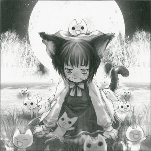
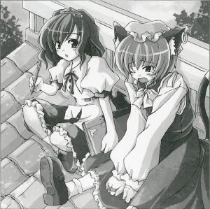

The Field Where the Cats Live
The Paradise of Cats Where Uncontrolled Ones Gather
It's said that deep in the mountains, far from the human village, is a small field where only cats live.
The cats live there independently, in a self-sustained society controlled only by cats.
Until now, it's been an unverified rumor, so I decided to go find the field and see for myself.
The field wasn't quite as the rumors described, but indeed, a group of cats were living in a ghost town abandoned by humans, which had essentially become a cat village.
However, it was hardly a well-regulated society - each cat did whatever it wanted.
It was a chaotic place where the cats constantly fought among themselves and hardly seemed to notice when a stranger such as myself appeared, and they would all crowd around at the sight of a scrap of food.
The individual in charge of trying to create some order in this chaos was Chen (Shikigami).
I asked her why she had brought all the cats here, and how.
"No, no, don't go over there.
Hm?
Why did I bring the cats here?
Ehehe, I wanted servants who would listen to my commands.
I figured I'd pick out the ones who were strongest and listened to my orders best and make them my servants.
Getting them here was easy.
When I put out food and just a little bit of catnip, they all came willingly.
They can find shelter from the weather in the old, abandoned houses, and I'll catch food for them, so it's like a cat paradise."
As she was speaking, the cats were roaming freely to and fro.
It seemed to be because their catnip was too strong, but according to Chen, if they couldn't run around like this they wouldn't obey her orders.
Certainly, a great number of youkai use animals as their servants. Frankly speaking, even I keep a crow.
However, I've never heard of a ghost cat keeping other cats.
That is probably because cats are very independent and willful creatures.
Perhaps this is because it would take a stronger youkai than a ghost cat to successfully keep other cats as servants.
 Aya
It looks like you've gotten scratched up quite a bit since then. Are you okay?
Chen
It's because they just won't listen to me. As soon as I tell them something they don't want to do, this happens. Why won't they listen to me?
Aya
You should understand that fairly well, shouldn't you? After all, you're a ghost cat.
Chen
What do you mean? Maybe I don't have enough catnip ...
Aya
What you're really missing is authority. In great quantities.
Chen
Maybe I don't have enough bait ...
Aya
Maybe you need to think more than you need bait? You're a cat yourself, so the best you can hope for in a servant is probably a mouse.
Chen
Having a mouse servant wouldn't be cool at all.
Aya
If you want to freely control cats, I think relying on catnip is a mistake. If some youkai gave you catnip, would you listen to their orders?
Chen
No way!
Aya
You're a familiar too, right? Perhaps you should think about why you listen to your master.
Chen
Hmmm. It's because Ran-sama is so strong, and ... wait, you mean I have to get stronger, or they won't listen?
Aya
Perhaps you should consider finding easier to control servants. Like, say, a mouse.
Chen
Or maybe something else, like a bird.
Aya
No, don't use birds.
Chen
Maybe I could try a sparrow ...
Aya
Oh, but even if you do that, you can't just abandon all the cats here. Something terrible would happen to them.
Chen
I'm not giving up on cats. I've already tamed this this well-
Aya
That's not saying that much ... It doesn't look like they're that fond of you.
Chen
Of course they are! They come running to see me when I put out food, and even if I'm not putting out food. That's where most of my scratches come from.
Aya
Maybe they just see you as food now, too. They'll eat you.
Chen
Well, my fingers are pretty chewed up.
Aya
You can't really win over animals by raising them like that.
Chen
Hm, say, how did you tame that crow? It looks like it really likes you.
Aya
When you're as strong as I am, all you have to do is hold out your hand to it when you first meet it. You can't really expect to have servants without that sort of absolute difference in power. Besides, this crow is more like my tool than my servant.
Chen
But even I'm way stronger than these normal cats.
Aya
I don't think you'd be so scratched up if that were the case.
Chen
I think that's because I don't have enough catnip ...
Aya
Look, your master is much, much stronger than you, right?
Chen
Yeah.
Aya
Your master doesn't have to use catnip on you to control you, right?
Chen
She does it sometimes.
Aya
... in any case, you have to have that sort of difference in power to order someone around.
Profile:
Chen
She is a shikigami who possesses a ghost cat living in the mountain, and she uses a black magical arts.
Ran Yakumo is a shikigami, too, she controls Chen.
Appearances:
Perfect Cherry Blossom, Imperishable Night